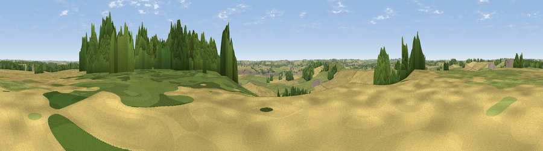

Harpole Hill
#31757 in England · top 42% of its area beats it · near HarpoleWhere it is
The exact computed spot (SP 67675 61762). Click the marker for map links.
The view, rendered

A 360° render of this exact spot computed from the terrain model, tree cover and land cover — summer colours, afternoon light, calibrated against photographs of famous viewpoints. Real trees, hedges and buildings will differ in detail.
The panorama
Grey silhouette: terrain skyline in each direction (720 bearings, Earth curvature and refraction included). Dashed green: skyline with trees (+15 m) and buildings (+8 m) as obstacles. Blue strip: how far the ground is visible on each bearing.
Where the view opens
Wedge length = distance to the farthest visible ground on that bearing (vegetation-aware). Rings at 10, 25 and 50 km.
What fills the view
54% cropland · 27% grassland · 16% woodland · 3% built-up
Angular shares of the visible panorama (visual magnitude), not map area. Landscape diversity 0.47 (0–1 Shannon).
Key numbers
More beautiful places nearby
The staircase of upgrades: each row has a higher view potential than everything closer. Driving times are estimates from straight-line distance, calibrated against real road routing — check an actual route before setting out.
| Place | Direction | Drive | Score |
|---|---|---|---|
| Viewpoint near Harpole | ESE · 0 km | ~1 min | 42.3 |
| Glassthorpe Hill | SW · 1 km | ~4 min | 44.9 |
| Viewpoint near Long Buckby | NNW · 7 km | ~14 min | 45.6 |
| Viewpoint near Norton | W · 9 km | ~18 min | 56.8 |
| Viewpoint near Staverton | W · 12 km | ~23 min | 63.3 |
| Big Hill - Staverton Clump | W · 13 km | ~23 min | 68.4 |
| Viewpoint near Northend | WSW · 29 km | ~46 min | 69.7 |
| Viewpoint near Northend | WSW · 29 km | ~46 min | 70.3 |
52.24989, -1.01012 · source: osm peak · position refined by local search. Computed location — check access rights before visiting.